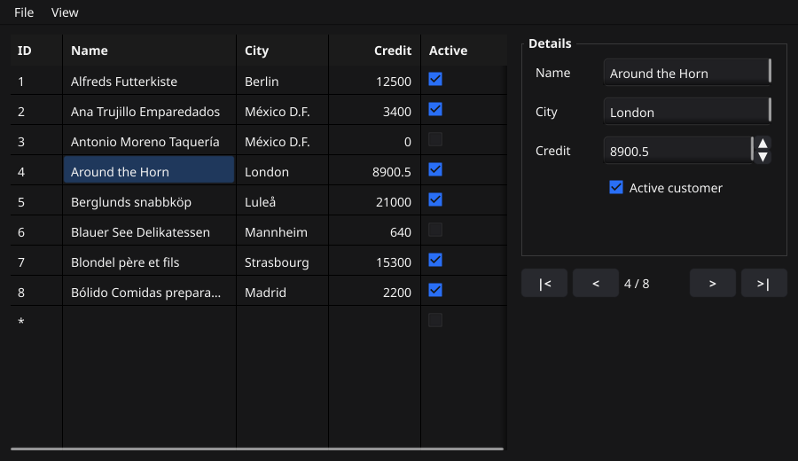
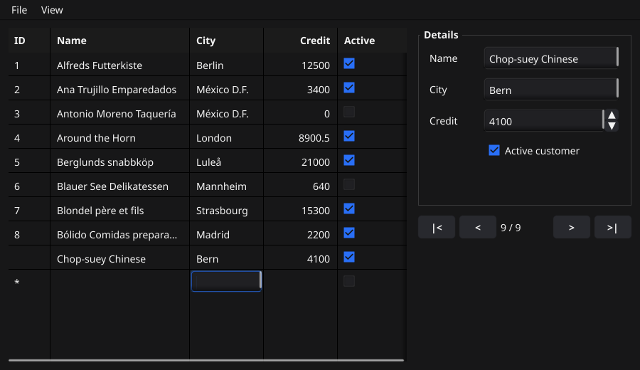
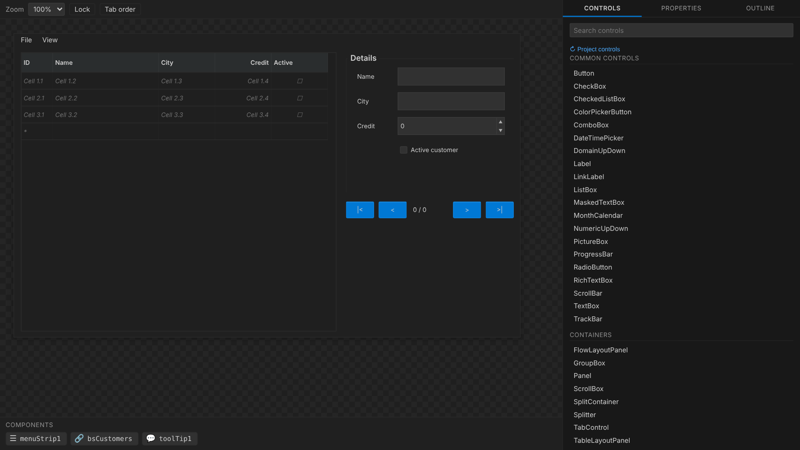
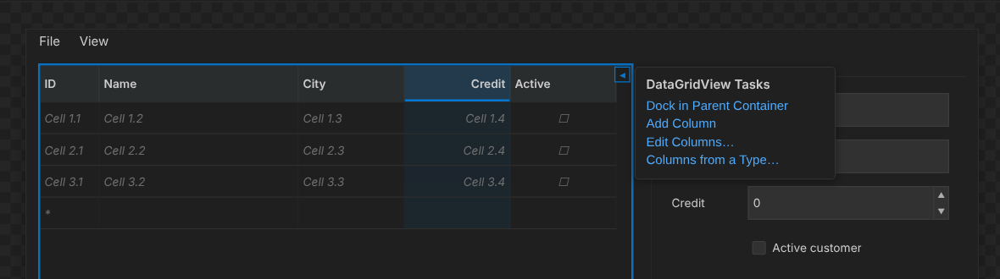
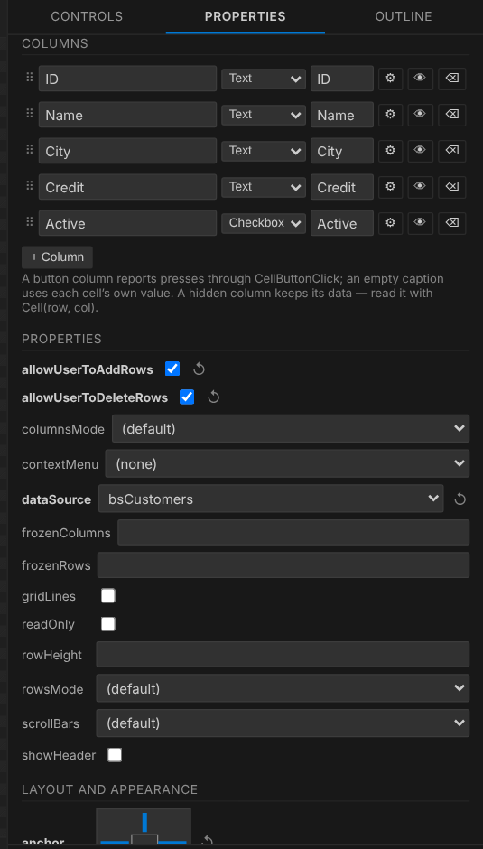
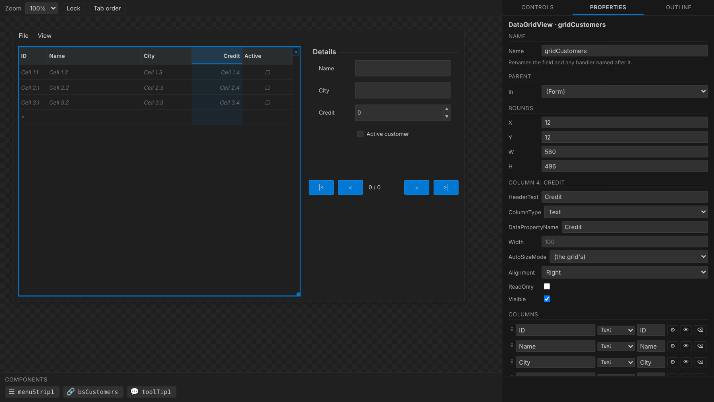
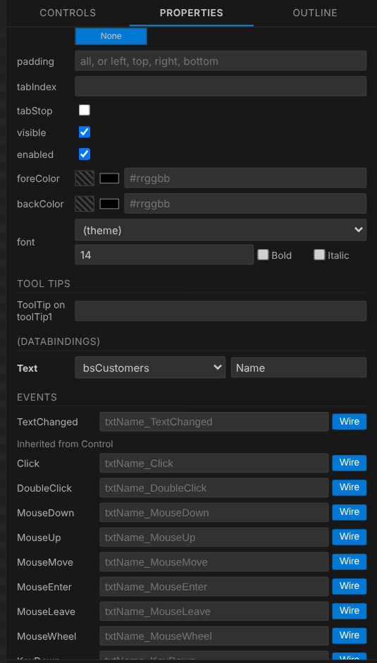
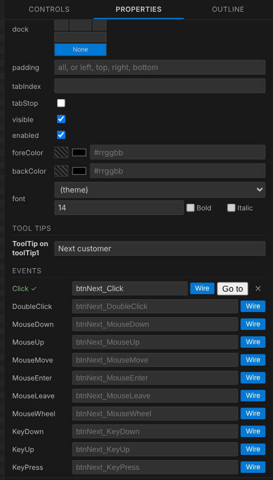
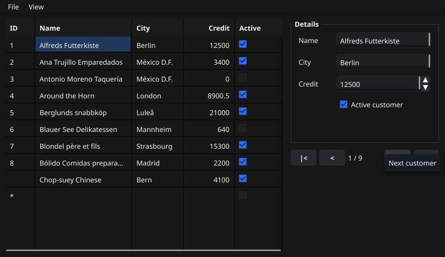

DataGridView
Электронная таблица оконного приложения: колонки с заголовками, строки
ячеек, правка на месте, а при привязке к BindingSource -
живое представление среза структур, в который пользователь может добавлять
записи и из которого может их удалять. Сетка GoForms повторяет
System.Windows.Forms.DataGridView, а дизайнер
собирает её колонка за колонкой.
Коротко

- Колонки бывают текстовыми, флажками и кнопками; у каждой своя ширина или режим размера, выравнивание, «только чтение» и видимость.
- Ячейки - строки. При привязке каждая колонка показывает одно поле записи с преобразованием в его тип и обратно.
- Редактирование - жест DataGridView: клик выделяет, второй клик (или просто ввод) открывает правку.
- Добавление и удаление: строка новой записи внизу и Delete для выбранной строки - с событиями, которые могут сказать «нет».
- Дизайнер правит всё это: кликните по заголовку колонки на холсте - и панель покажет эту колонку.
Первая сетка
NewDataGridView принимает заголовки колонок.
Строки добавляются строками, по одной на колонку:
mf.gridOrders = goforms.NewDataGridView("Order", "Customer", "Total") mf.gridOrders.SetBounds(12, 12, 480, 260) mf.AddControl(mf.gridOrders) // Строки — это строки, по одной на колонку. mf.gridOrders.AddRow("1001", "Acme Corp", "1240.00") mf.gridOrders.AddRow("1002", "Globex", "87.50")
По умолчанию сетка прокручивается по обеим осям, у неё есть строка заголовков и линии сетки, и каждая ячейка редактируема. Всё, что ниже, меняет что-то из этого.
Колонки
Колонка - это *goforms.GridColumn. Если строить
сетку в коде, все настройки колонки можно задать сразу:
grid := goforms.NewDataGridViewColumns([]*goforms.GridColumn{ {Name: "id", Title: "ID", Hidden: true}, // хранится, но не рисуется {Name: "customer", Title: "Customer", SizeMode: goforms.SizeFill, MinWidth: 120}, {Name: "total", Title: "Total", Width: 90, Align: goforms.AlignRight, ReadOnly: true}, {Name: "paid", Title: "Paid", Kind: goforms.GridColumnCheckBox}, {Name: "open", Title: "", Kind: goforms.GridColumnButton, ButtonText: "Open..."}, })
| Поле | WinForms | Значение |
|---|---|---|
Name | Name | Ключ, по которому ищут CellByName и ColumnByName. На экране не виден. |
Title | HeaderText | Подпись в строке заголовков. |
Width | Width | Пиксели, в режиме SizeFixed. |
SizeMode | AutoSizeMode | SizeFixed, SizeToContent (по самой широкой ячейке) или SizeFill (доля оставшегося места). |
MinWidth, MaxWidth | MinimumWidth | Ограничивают подогнанную и заполняющую ширину. |
FillWeight | FillWeight | Доля заполняющей колонки среди заполняющих. |
Align | DefaultCellStyle.Alignment | AlignLeft, AlignCenter, AlignRight - ячейки и заголовок. |
ReadOnly | ReadOnly | Ячейки колонки никогда не открывают редактор. |
Kind | класс колонки | GridColumnText, GridColumnCheckBox или GridColumnButton. |
ButtonText | Text + UseColumnTextForButtonValue | Одна подпись на всех кнопках; пусто - у каждой кнопки текст её ячейки. |
Hidden | Visible = false | Колонка хранит данные, но не рисуется и не занимает ширину. |
DataPropertyName | DataPropertyName | Поле привязанной записи, которое показывает колонка. |
У каждого есть сеттер с индексом колонки - их и пишет дизайнер:
SetColumnWidth, SetColumnSizeMode,
SetColumnAlign, SetColumnReadOnly,
SetColumnKind, SetColumnButtonText,
SetColumnHidden, SetColumnDataPropertyName.
AddColumn добавляет колонку в конец, а
Column(i) возвращает саму колонку.
Индексы всегда считают все колонки, видимые и нет. Скрытая колонка
id - способ, которым строка несёт ключ, по
которому её загрузили: CellByName(row, "id")
читает её так, будто она на экране. Какие колонки рисуются, говорит
VisibleColumns().
Строки и ячейки
g := mf.gridOrders g.AddRow("1003", "Initech", "3999.99") g.InsertRow(0, "1000", "Umbrella", "12.00") // в самый верх g.SetCell(1, 2, "88.00") // без CellValueChanged g.RemoveRow(3) n := g.RowCount() who := g.Cell(0, 1) // по индексу id := g.CellByName(0, "id") // по GridColumn.Name - и скрытые тоже all := g.Rows() // копия: [][]string g.Clear()
SetCell и AddRow -
это говорит программа, поэтому CellValueChanged
они не вызывают: это событие - про то, что ввёл пользователь. Зато они
вызывают RowsChanged - для всего, что показывает
количество строк.
Флажки и кнопки
Ячейки колонки флажков - "true" или
"false", нарисованные галочкой, которую
пользователь переключает одним кликом. Ячейки колонки кнопок - кнопки, для
действий над строкой, которые обычно нужны сетке:
g.SetColumnKind(3, goforms.GridColumnCheckBox) // "true" / "false" g.SetColumnKind(4, goforms.GridColumnButton) g.SetColumnButtonText(4, "Open...") // "" - подпись = текст ячейки g.CellButtonClick.Handle(func(sender any, e goforms.GridCellEventArgs) { mf.openOrder(g.CellByName(e.Row, "id")) })
У кнопки нет значения, которое можно править, поэтому колонка кнопок никогда не редактируется, а кнопки сетки «только для чтения» продолжают работать - «только чтение» относится к значениям. У строки новой записи кнопок нет: она ещё не строка.
Ширины, высоты, прокрутка
g.SetAutoSizeColumnsMode(goforms.SizeToContent) // все колонки разом g.SetColumnWidth(0, 56) // пиксели; переводит в SizeFixed g.SetColumnSizeMode(1, goforms.SizeFill) // забирает остаток g.Column(1).FillWeight = 2 // вдвое больше другой Fill-колонки g.SetColumnAlign(3, goforms.AlignRight) // и заголовок тоже g.SetRowHeight(28) // или: g.SetAutoSizeRowsMode(goforms.SizeToContent) // строка по высоте текста g.SetScrollBars(goforms.ScrollBarsVertical) // колонки ужимаются по ширине g.SetFrozenColumns(1) // не уезжает при прокрутке g.SetShowHeader(true) g.SetGridLines(true)
Порядок на каждой раскладке: фиксированные колонки берут свою ширину,
подгоняемые - ширину содержимого, а заполняющие делят остаток
пропорционально FillWeight, не опускаясь ниже
MinWidth. Режим колонки, записанный после общего
SetAutoSizeColumnsMode, перекрывает его для этой
колонки - именно так их пишет дизайнер.
SetScrollBars | Что происходит, когда содержимое больше |
|---|---|
ScrollBarsBoth | По умолчанию: естественные размеры, обе полосы прокрутки по мере надобности. |
ScrollBarsVertical | Колонки вписываются в ширину - её забирают заполняющие колонки или все ужимаются пропорционально до своих минимумов. |
ScrollBarsHorizontal | Сетка растёт в высоту под все строки, как при AutoSize. |
ScrollBarsNone | И то, и другое. |
Холст дизайнера считает ширины колонок тем же кодом, что и работающая сетка (golden-тест держит их в согласии), так что во время проектирования вы видите то, что получите.
Редактирование
Сетка редактируема, если она сама или колонка не «только для чтения». Правка применяется по мере ввода: к моменту закрытия редактора ячейка - а у привязанной сетки и поле записи - уже содержит текст.
g.SetReadOnly(false) // по умолчанию: все ячейки правятся g.SetColumnReadOnly(0, true) // кроме этой колонки g.CellValueChanged.Handle(func(sender any, e goforms.GridCellValueEventArgs) { log.Printf("row %d col %d: %q -> %q", e.Row, e.Col, e.OldValue, e.NewValue) }) g.BeginEdit(2, 1) // открыть редактор из кода g.EndEdit()
CellValueChanged срабатывает на каждое изменение
пользователя, с текстом до и после. У привязанной сетки текст, который не
преобразуется в тип поля (буквы в числовой колонке), возвращается к прежнему.
Мышь и клавиатура
Что может пользователь работающей сетки:
| Жест | Что делает |
|---|---|
| Клик по ячейке | Выделяет её (а у привязанной сетки - переводит источник на её запись). |
| Ещё один клик по выделенной ячейке | Открывает её редактор. |
| Ввод на выделенной ячейке | Открывает редактор, и введённое заменяет текст - как в WinForms. |
| Enter или Escape | Закрывает редактор. Правка уже применена. |
| ← →, Delete, Backspace в редакторе | Правят его текст: Delete здесь удаляет символ, а не строку. |
| Стрелки, затем Space | Двигают клавиатурную подсветку по ячейкам и выделяют подсвеченную. |
| Клик по ячейке-флажку | Переключает его. |
| Клик по ячейке-кнопке | Вызывает CellButtonClick. |
Ввод в строку со * | Превращает её в новую строку (запись); ниже появляется новая строка *. |
| Delete на выделенной строке | Удаляет её, если удаление разрешено, - после UserDeletingRow, которое может отменить. |

Выделение
g.SelectCell(4, 0) row, col := g.SelectedRow(), g.SelectedColumn() // -1, если ничего g.ScrollToRow(40) g.ClearSelection() g.SelectionChanged.Handle(func(sender any, e goforms.GridCellEventArgs) { if e.Row >= 0 { mf.lblStatus.SetText(g.Cell(e.Row, 1)) } })
Выделение - одна ячейка. SelectionChanged
срабатывает, когда оно сдвигается - на другую строку или колонку, - и с
Row == -1, когда снято.
CellClick срабатывает на каждый клик, сдвинулось
выделение или нет.
События
| Событие | Аргумент | Когда |
|---|---|---|
CellClick | GridCellEventArgs | Клик по ячейке. |
SelectionChanged | GridCellEventArgs | Сменилась выделенная ячейка; Row = -1, если ничего не выделено. |
CellValueChanged | GridCellValueEventArgs | Пользователь изменил ячейку: OldValue, NewValue. |
CellButtonClick | GridCellEventArgs | Нажата ячейка-кнопка. |
RowsChanged | EventArgs | Строки добавлены, удалены или заменены. |
UserAddedRow | GridRowEventArgs | Ввод в строку новой записи превратил её в строку. |
UserDeletingRow | *GridRowCancelEventArgs | Пользователь нажал Delete на строке. Поставьте Cancel, чтобы оставить её. |
UserDeletedRow | GridRowEventArgs | Строки (и её записи) больше нет. |
Плюс события любого контрола: Click,
KeyDown, MouseWheel,
GotFocus и остальные. Дизайнер привязывает любое
из них с правильным типом аргумента.
Привязка к записям
BindingSource держит список записей - срез
структур или указателей на структуры - и текущую позицию, и синхронизирует
все привязанные к нему контролы. Привязанная сетка показывает строку на
каждую запись, а каждая колонка - поле, названное её
DataPropertyName.
package models type Customer struct { ID int Name string City string Credit float64 Active bool }
// а данные отдаёте вы, когда они есть: func (mf *MainForm) MainForm_Load(sender any, e goforms.EventArgs) { mf.bsCustomers.SetDataSource(&customers) // *[]models.Customer }
// это пишет дизайнер: mf.bsCustomers = goforms.NewBindingSource() mf.gridCustomers.SetDataSource(mf.bsCustomers) mf.gridCustomers.SetColumnDataPropertyName(0, "ID") mf.gridCustomers.SetColumnDataPropertyName(1, "Name") mf.bsCustomers.Bind(mf.txtName, "Text", "Name") mf.bsCustomers.Bind(mf.numCredit, "Value", "Credit") mf.bsCustomers.Bind(mf.chkActive, "Checked", "Active")
- Выбор строки двигает позицию; движение позиции (
MoveNext,SetPosition) выделяет строку. - Изменённая ячейка записывает поле обратно с преобразованием:
string,bool, все целые и вещественные типы. Текст, который не преобразуется, возвращается. - Поля ищутся по имени, поэтому показать можно только экспортируемые.
- Сетка, где ни одна колонка не называет поле, показывает поле с именем заголовка колонки: колонка
"Name"- полеName.
mf.bsCustomers.MoveFirst() mf.bsCustomers.MovePrevious() mf.bsCustomers.MoveNext() mf.bsCustomers.MoveLast() mf.bsCustomers.SetPosition(3) c := mf.bsCustomers.Current().(models.Customer) // запись в Position n := mf.bsCustomers.Count() mf.bsCustomers.PositionChanged.Handle(func(sender any, e goforms.EventArgs) { mf.lblPosition.SetText(fmt.Sprintf("%d / %d", mf.bsCustomers.Position()+1, mf.bsCustomers.Count())) }) // поменяли срез в коде? покажите: customers = append(customers, models.Customer{ID: 9, Name: "Wolski"}) mf.bsCustomers.ResetBindings()
ListBox и ComboBox привязываются так же, показывая по одному полю каждой записи:
mf.lstCustomers.SetDataSource(mf.bsCustomers) // по пункту на запись mf.lstCustomers.SetDisplayMember("Name") mf.cmbCustomers.SetDataSource(mf.bsCustomers) mf.cmbCustomers.SetDisplayMember("City")
Панель подробностей
Bind(контрол, свойство, поле) - это
control.DataBindings.Add: контрол показывает поле
текущей записи, а когда пользователь его меняет - записывает обратно, и
ячейка сетки меняется вместе с ним. Привязываемые свойства:
| Свойство | Контролы |
|---|---|
Text | TextBox, MaskedTextBox, RichTextBox, Label, LinkLabel |
Checked | CheckBox, RadioButton |
Value | NumericUpDown, TrackBar |
Первый скриншот на этой странице - ровно это: четыре контрола в
Details привязаны к тому же источнику, что и сетка, а кнопки
|< < > >| вызывают
MoveFirst … MoveLast.
Добавление и удаление
mf.gridCustomers.SetAllowUserToAddRows(true) // строка * mf.gridCustomers.SetAllowUserToDeleteRows(true) // Delete удаляет выбранную строку mf.bsCustomers.SetDataSource(&customers) // по указателю - срез должен расти mf.gridCustomers.UserAddedRow.Handle(func(sender any, e goforms.GridRowEventArgs) { customers[e.Row].ID = nextID() // запись уже в срезе mf.bsCustomers.ResetBindings() })
Если добавление разрешено, сетка рисует ещё одну строку, отмеченную
*. Первый введённый в неё символ превращает её в строку: у
привязанной сетки в срез добавляется запись с нулевыми значениями, введённое
поле записывается в неё, остальные ячейки показывают остальные её поля, и
срабатывает UserAddedRow. Ниже появляется новая
строка *. Выделение строки * позицию не двигает -
это ещё не запись.
Если разрешено удаление, Delete на выделенной строке (не во время
правки) вызывает UserDeletingRow, удаляет строку
и её запись, если обработчик не отменил, затем вызывает
UserDeletedRow:
func (mf *MainForm) gridCustomers_UserDeletingRow(sender any, e *goforms.GridRowCancelEventArgs) { if customers[e.Row].Credit > 0 { e.Cancel = true // должников не удаляем } } func (mf *MainForm) gridCustomers_UserDeletedRow(sender any, e goforms.GridRowEventArgs) { mf.dirty = true }
// то же самое из меню или кнопки: if _, err := mf.bsCustomers.AddNew(); err != nil { // нулевая запись в конец goforms.ShowMessageBox(mf.Form, err.Error(), "Customers", goforms.MessageBoxOK, goforms.MessageBoxError, nil) } mf.bsCustomers.RemoveAt(mf.bsCustomers.Position())
BindingSource, которому дали
customers, держит копию заголовка среза и не
может его удлинить, поэтому привязанная к нему сетка не рисует строку
*, а AddNew возвращает ошибку.
Отдавайте &customers. Непривязанная сетка в
любом случае добавляет и удаляет обычные строки.
Сетка на форме
На вкладке Controls дизайнера DataGridView - в разделе Data, а BindingSource - в Components: места на форме у него нет, поэтому он попадает в лоток под холстом. Кликните или перетащите любой из них на форму.

Смарт-тег сетки - маленькая стрелка в её правом верхнем углу - содержит частые задачи: растянуть по контейнеру, добавить колонку, перейти к списку колонок и сделать колонки из типа.

Список колонок

По строке на колонку, по порядку:
- ⠿ - перетащите, чтобы переставить. Сеттеры едут за своей колонкой.
- Подпись - текст заголовка.
- Тип - Text, Checkbox или Button.
- Поле - её
DataPropertyName. - ⚙ - править колонку целиком (ниже).
- 👁 - скрыть или показать.
- ⌫ - удалить.
- + Column добавляет колонку в конец.
Под списком - свойства самой сетки: columnsMode, rowsMode, rowHeight, scrollBars, frozenColumns/Rows, gridLines, showHeader, readOnly, allowUserToAddRows, allowUserToDeleteRows и dataSource. Жирное свойство задано в файле; ↺ рядом убирает строку.
Колонка целиком
Кликните по заголовку колонки на холсте - или по ⚙ в списке - и панель откроет для неё группу Column, над настройками самой сетки. Заголовок остаётся подсвеченным, пока правится эта колонка; выбор другого контрола её отпускает.

| В панели | Пишет |
|---|---|
| HeaderText | Подпись в NewDataGridView(…) |
| ColumnType | SetColumnKind(i, goforms.GridColumnCheckBox), а для колонки кнопок ещё Text для SetColumnButtonText |
| DataPropertyName | SetColumnDataPropertyName(i, "Credit") |
| Width | SetColumnWidth(i, 56) - фиксированная ширина |
| AutoSizeMode | SetColumnSizeMode(i, goforms.SizeFill); (the grid's) ничего не пишет |
| Alignment | SetColumnAlign(i, goforms.AlignRight) |
| ReadOnly | SetColumnReadOnly(i, true) |
| Visible | SetColumnHidden(i, true), если флажок снят |
Каждое изменение - одна правка файла дизайнера, отменяемая Ctrl+Z, как любая другая, и холст сразу перерисовывает сетку.
Колонки из типа
Columns from a Type… в смарт-теге показывает структуры,
объявленные в вашем проекте. Выберите одну -
models.Customer - и сетка получит по колонке на
каждое экспортируемое поле, с его именем в заголовке и привязкой к нему;
поле bool становится колонкой флажков. Это
заменяет прежние колонки сетки; дальше донастройте их.
Привязка в дизайнере
Задайте сетке dataSource - источник привязки формы: список
предлагает компоненты BindingSource этой формы.
Тогда у каждого привязываемого контрола (текстового поля, флажка, числового
поля) появляется группа (DataBindings): источник и поле.


Чего дизайнер не может - так это дать источнику данные: это работа
программы, в Load или там, где данные появляются:
mf.bsCustomers.SetDataSource(&customers).
До тех пор холст показывает ячейки-заглушки.
Пример целиком
Форма со всех скриншотов этой страницы - в том виде, в каком её оставил дизайнер. Первый файл - дизайнера, второй пишете вы.
package mainform import "github.com/Go-Forms/GoForms" type MainForm struct { *goforms.Form menuStrip1 *goforms.MenuStrip bsCustomers *goforms.BindingSource toolTip1 *goforms.ToolTip gridCustomers *goforms.DataGridView grpDetails *goforms.GroupBox lblName *goforms.Label txtName *goforms.TextBox lblCity *goforms.Label txtCity *goforms.TextBox lblCredit *goforms.Label numCredit *goforms.NumericUpDown chkActive *goforms.CheckBox btnFirst *goforms.Button btnPrev *goforms.Button btnNext *goforms.Button btnLast *goforms.Button lblPosition *goforms.Label } func NewMainForm() *MainForm { mf := &MainForm{Form: goforms.NewForm("Customers", 900, 520)} mf.initializeComponent() return mf } func (mf *MainForm) initializeComponent() { mf.SetClientSize(900, 520) mf.Load.Handle(mf.MainForm_Load) mf.menuStrip1 = goforms.NewMenuStrip( goforms.NewTopMenu("File", goforms.NewMenuItem("New customer").OnClick(mf.mnuNew_Click), goforms.NewMenuItem("Delete customer").OnClick(mf.mnuDelete_Click), goforms.NewMenuSeparator(), goforms.NewMenuItem("Export").Add( goforms.NewMenuItem("CSV...").OnClick(mf.mnuExportCsv_Click), goforms.NewMenuItem("JSON...").SetEnabled(false), ), ), goforms.NewTopMenu("View", goforms.NewMenuItem("Refresh").OnClick(mf.mnuRefresh_Click), ), ) mf.SetMainMenu(mf.menuStrip1) mf.bsCustomers = goforms.NewBindingSource() mf.toolTip1 = goforms.NewToolTip() mf.gridCustomers = goforms.NewDataGridView("ID", "Name", "City", "Credit", "Active") mf.gridCustomers.SetBounds(12, 12, 560, 496) mf.gridCustomers.SetAnchor(goforms.AnchorTop | goforms.AnchorBottom | goforms.AnchorLeft | goforms.AnchorRight) mf.gridCustomers.SetDataSource(mf.bsCustomers) mf.gridCustomers.SetAllowUserToAddRows(true) mf.gridCustomers.SetAllowUserToDeleteRows(true) mf.gridCustomers.SetColumnDataPropertyName(0, "ID") mf.gridCustomers.SetColumnWidth(0, 56) mf.gridCustomers.SetColumnReadOnly(0, true) mf.gridCustomers.SetColumnDataPropertyName(1, "Name") mf.gridCustomers.SetColumnSizeMode(1, goforms.SizeFill) mf.gridCustomers.SetColumnDataPropertyName(2, "City") mf.gridCustomers.SetColumnDataPropertyName(3, "Credit") mf.gridCustomers.SetColumnAlign(3, goforms.AlignRight) mf.gridCustomers.SetColumnDataPropertyName(4, "Active") mf.gridCustomers.SetColumnKind(4, goforms.GridColumnCheckBox) mf.gridCustomers.UserDeletingRow.Handle(mf.gridCustomers_UserDeletingRow) mf.AddControl(mf.gridCustomers) mf.grpDetails = goforms.NewGroupBox("Details", 300, 250) mf.grpDetails.SetBounds(588, 12, 300, 250) mf.grpDetails.SetAnchor(goforms.AnchorTop | goforms.AnchorRight) mf.lblName = goforms.NewLabel("Name") mf.lblName.SetBounds(16, 30, 70, 24) mf.grpDetails.AddControl(mf.lblName) mf.txtName = goforms.NewTextBox() mf.txtName.SetBounds(92, 26, 190, 32) mf.bsCustomers.Bind(mf.txtName, "Text", "Name") mf.grpDetails.AddControl(mf.txtName) mf.lblCity = goforms.NewLabel("City") mf.lblCity.SetBounds(16, 74, 70, 24) mf.grpDetails.AddControl(mf.lblCity) mf.txtCity = goforms.NewTextBox() mf.txtCity.SetBounds(92, 70, 190, 32) mf.bsCustomers.Bind(mf.txtCity, "Text", "City") mf.grpDetails.AddControl(mf.txtCity) mf.lblCredit = goforms.NewLabel("Credit") mf.lblCredit.SetBounds(16, 118, 70, 24) mf.grpDetails.AddControl(mf.lblCredit) mf.numCredit = goforms.NewNumericUpDown(0, 100000, 0) mf.numCredit.SetBounds(92, 114, 190, 32) mf.bsCustomers.Bind(mf.numCredit, "Value", "Credit") mf.grpDetails.AddControl(mf.numCredit) mf.chkActive = goforms.NewCheckBox("Active customer") mf.chkActive.SetBounds(92, 158, 190, 28) mf.bsCustomers.Bind(mf.chkActive, "Checked", "Active") mf.grpDetails.AddControl(mf.chkActive) mf.AddControl(mf.grpDetails) mf.btnFirst = goforms.NewButton("|<") mf.btnFirst.SetBounds(588, 276, 52, 32) mf.btnFirst.SetAnchor(goforms.AnchorTop | goforms.AnchorRight) mf.btnFirst.Click.Handle(mf.btnFirst_Click) mf.toolTip1.SetToolTip(mf.btnFirst, "First customer") mf.AddControl(mf.btnFirst) mf.btnPrev = goforms.NewButton("<") mf.btnPrev.SetBounds(646, 276, 52, 32) mf.btnPrev.SetAnchor(goforms.AnchorTop | goforms.AnchorRight) mf.btnPrev.Click.Handle(mf.btnPrev_Click) mf.toolTip1.SetToolTip(mf.btnPrev, "Previous customer") mf.AddControl(mf.btnPrev) mf.btnNext = goforms.NewButton(">") mf.btnNext.SetBounds(778, 276, 52, 32) mf.btnNext.SetAnchor(goforms.AnchorTop | goforms.AnchorRight) mf.btnNext.Click.Handle(mf.btnNext_Click) mf.toolTip1.SetToolTip(mf.btnNext, "Next customer") mf.AddControl(mf.btnNext) mf.btnLast = goforms.NewButton(">|") mf.btnLast.SetBounds(836, 276, 52, 32) mf.btnLast.SetAnchor(goforms.AnchorTop | goforms.AnchorRight) mf.btnLast.Click.Handle(mf.btnLast_Click) mf.toolTip1.SetToolTip(mf.btnLast, "Last customer") mf.AddControl(mf.btnLast) mf.lblPosition = goforms.NewLabel("0 / 0") mf.lblPosition.SetBounds(704, 280, 68, 24) mf.lblPosition.SetAnchor(goforms.AnchorTop | goforms.AnchorRight) mf.AddControl(mf.lblPosition) }
package mainform import ( "fmt" "github.com/Go-Forms/GoForms" "example.com/customers/Models" ) // customers - то, что показывает сетка. Источник привязки держит указатель // на срез, поэтому строка новой записи может дописывать в него, а Delete - // удалять из него. var customers = []models.Customer{ {ID: 1, Name: "Alfreds Futterkiste", City: "Berlin", Credit: 12500, Active: true}, {ID: 2, Name: "Ana Trujillo Emparedados", City: "México D.F.", Credit: 3400, Active: true}, {ID: 3, Name: "Antonio Moreno Taquería", City: "México D.F.", Credit: 0, Active: false}, {ID: 4, Name: "Around the Horn", City: "London", Credit: 8900.5, Active: true}, {ID: 5, Name: "Berglunds snabbköp", City: "Luleå", Credit: 21000, Active: true}, {ID: 6, Name: "Blauer See Delikatessen", City: "Mannheim", Credit: 640, Active: false}, {ID: 7, Name: "Blondel père et fils", City: "Strasbourg", Credit: 15300, Active: true}, {ID: 8, Name: "Bólido Comidas preparadas", City: "Madrid", Credit: 2200, Active: true}, } func (mf *MainForm) MainForm_Load(sender any, e goforms.EventArgs) { mf.bsCustomers.SetDataSource(&customers) mf.bsCustomers.PositionChanged.Handle(func(sender any, e goforms.EventArgs) { mf.showPosition() }) mf.bsCustomers.ListChanged.Handle(func(sender any, e goforms.EventArgs) { mf.showPosition() }) mf.showPosition() } func (mf *MainForm) showPosition() { mf.lblPosition.SetText(fmt.Sprintf("%d / %d", mf.bsCustomers.Position()+1, mf.bsCustomers.Count())) } func (mf *MainForm) gridCustomers_UserDeletingRow(sender any, e *goforms.GridRowCancelEventArgs) { if customers[e.Row].Credit > 0 { e.Cancel = true // должников не удаляем } } func (mf *MainForm) btnFirst_Click(sender any, e goforms.MouseEventArgs) { mf.bsCustomers.MoveFirst() } func (mf *MainForm) btnPrev_Click(sender any, e goforms.MouseEventArgs) { mf.bsCustomers.MovePrevious() } func (mf *MainForm) btnNext_Click(sender any, e goforms.MouseEventArgs) { mf.bsCustomers.MoveNext() } func (mf *MainForm) btnLast_Click(sender any, e goforms.MouseEventArgs) { mf.bsCustomers.MoveLast() } func (mf *MainForm) mnuNew_Click(sender any, e goforms.EventArgs) { mf.bsCustomers.AddNew() } func (mf *MainForm) mnuDelete_Click(sender any, e goforms.EventArgs) { mf.bsCustomers.RemoveAt(mf.bsCustomers.Position()) } func (mf *MainForm) mnuExportCsv_Click(sender any, e goforms.EventArgs) {} func (mf *MainForm) mnuRefresh_Click(sender any, e goforms.EventArgs) { mf.bsCustomers.ResetBindings() }

, показана подсказка Next customer." loading="lazy">Подводные камни
У привязанной сетки нет строки *
Источнику отдали срез по значению. Передайте указатель: SetDataSource(&customers).
Колонка пустая
Её DataPropertyName не называет экспортируемого поля записи - проверьте написание и то, что поле начинается с заглавной буквы.
Изменения из кода не видны
Сетка показывает записи такими, какими они были при привязке. Изменив срез сами, вызовите ResetBindings() - как в WinForms.
Введённое число откатилось
Текст не преобразовался в тип поля - "12,5" в float64. Ячейка возвращается к значению записи.
SetCell не вызвал событие
Так задумано: CellValueChanged - для правок пользователя, чтобы обработчик, пишущий ячейки, не вызывал сам себя.
Delete удалил символ, а не строку
Был открыт редактор. Enter закрывает его, и тогда Delete относится к строке.